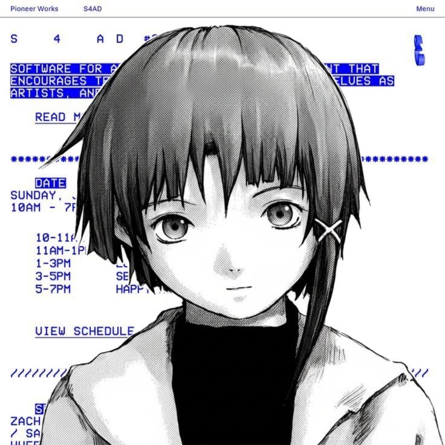

hi, i'm
Dyok
use arch btw, make android modules, and don't want to touch grass.
about
i'm a hobbyist who never goes outside. use arch btw(2), a laptop and fucking s23 i refuse to stop tweaking, and a bunch of silly projects i made for no reason.
why: because the idea is fun. no other reason. i like clean configs, small tools, and software that is open-source and respects the user. usually, less privacy equals better performance -- so i take the L on speed where it matters. when i'm not at a screen i'm asleep or wish i was.
things i've made
three projects i actually finished. hover one to pull it out.
find me
i'm easier to reach elsewhere. pick a platform.